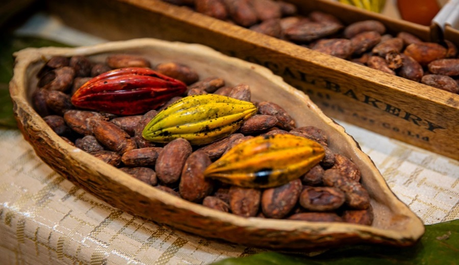
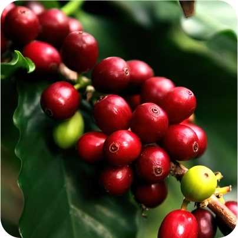
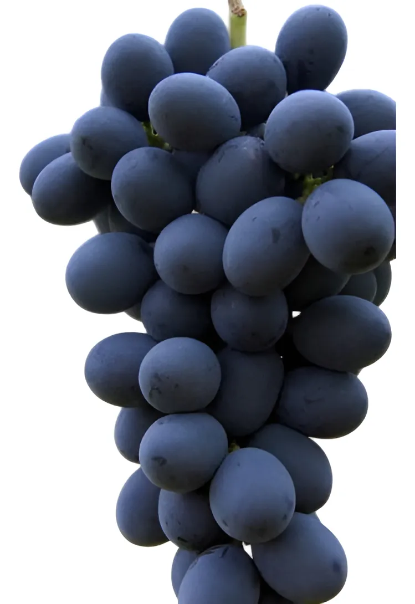

Matrices vegetales en investigación

Cacao
Theobroma cacao – fuente de polifenoles bioactivos.

Café (cerezo)
Coffea arabica – matriz rica en compuestos fenólicos.

Manayupa
Desmodium molliculum – especie vegetal andina biofuncional.

Sachajergón
Dracontium loretense – especie amazónica investigada.

Uva negra
Vitis vinifera – fuente natural de resveratrol.